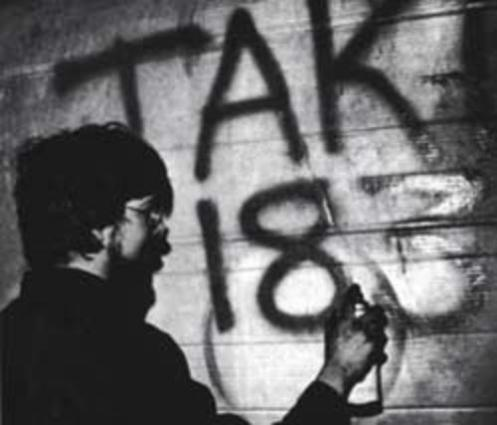
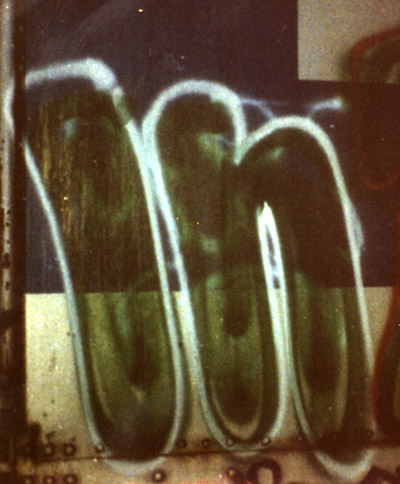
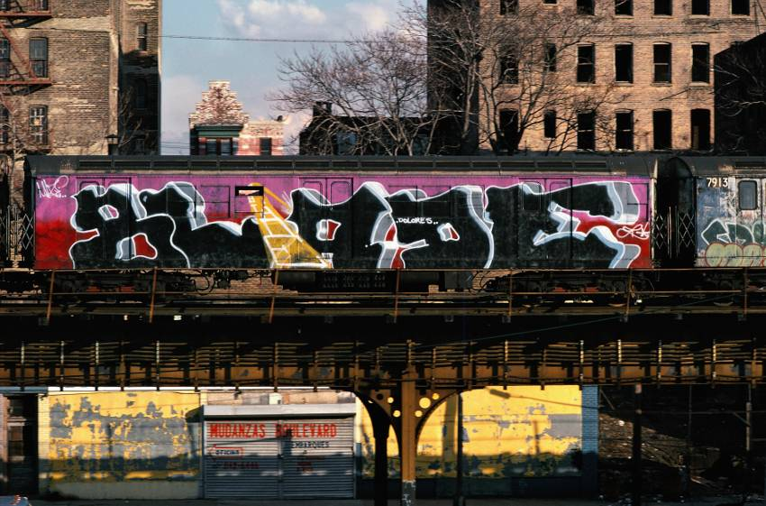
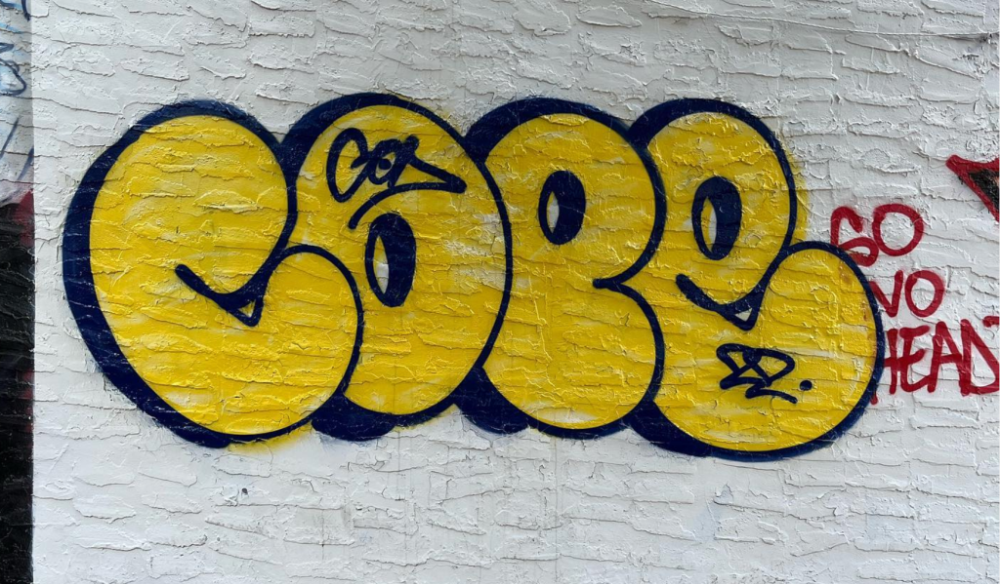
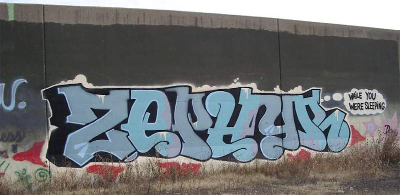

Al aproximarse al graffiti es habitual fijarse en las partes más aparentemente artísticas, como los murales elaborados. Y enseguida surge la pregunta: ¿de dónde salen estas otras obras más bastas, esas letras grandes y redondeadas, ejecutadas con mucha rapidez y solo dos colores, que aparecen sobre todo en los cierres de los comercios? Se trata de los llamados flopeos, también llamados potas o throw-ups, y su origen se remonta al año 1974, en Nueva York. Por entonces era ya habitual que un graffiti cubriera todo el costado de un vagón de metro, y los escritores de graffiti más ambiciosos se estaban especializando en trabajos de esa escala, cada vez más sofisticados. En ese momento, un escritor decidió dar un golpe de timón y volver a la esencia del graffiti: la cantidad.
Los throw-ups a diferencia del tag tienen un proceso mas elavorado pero mantiene la ideologia principal que es hacer la mayor cantidad antes de concentrarse en la calidad
| Tag-artistas | Imagenes | Descripción |
| taki183 |  | Como tal no es un throw-up pero este fue uno de los pioneros del graffiti que antes que muchos hacia estas simples letras en todo new york para ser mas exacto en el ho 1971 |
| IN |  | Son letras simples de un solo color y una sola linea para marcar la forma de las letras lo que seria el baseline |
| Blade |  | Las letras de blade son un ejemplo basico de lo que es un throw up, sus letras siguen el esquema de usar solo 2 colores en el throw-up, aunque el fondo si esta pintado lo que le da un buen efecto visual |
| Cope2 |  | Las letras de cope son tan simples como perfectas, podriamos decir que su estilo esta muy practicado y es complicado ya que se puede ver como letras simples pero estan hechas de manera muy precisa |
| Zephyr |  | Las letras de zephyr son tal vez de las mejores del mundo, aparte de ser uno de los graffiteros mas famosos de new york tambien es uno de los que mas tecnica tiene ademas de lo completas que son su letras ya que el estilo, el color y el tamaño estan ejecudos a la perfección |